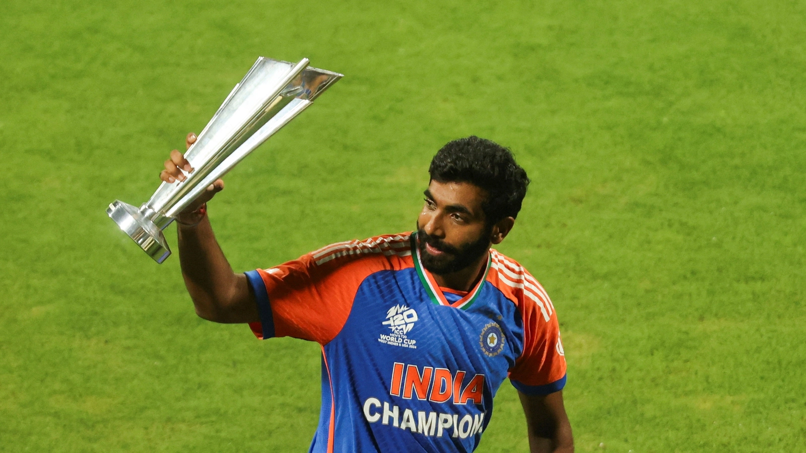

Rohit Sharma
Rohit Sharma is a famous Indian cricketer, known for his powerful hitting and captaincy.
Read more

Jasprit Bumrah
Jasprit Jasbirsingh Bumrah is an Indian cricketer plays in all formats of the game.He is the GOAT bowler in the world.
Read more
Hardik Pandya
Hardik pandya is an all-rounder and a right-handed middle order batsman and fast-medium bowler
Read more